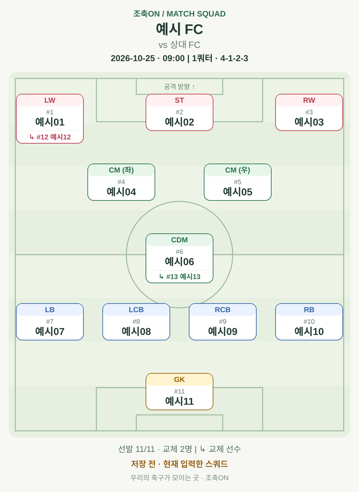
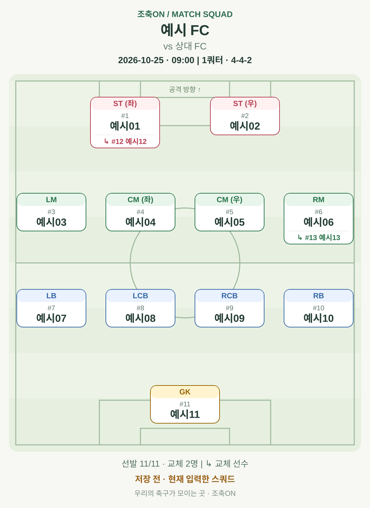
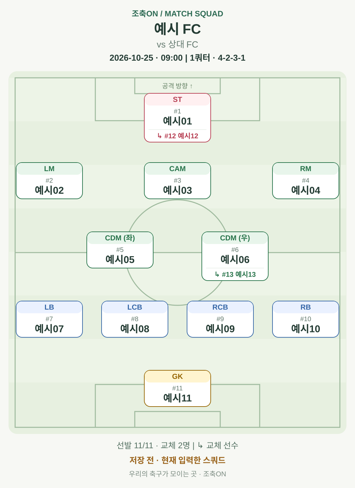
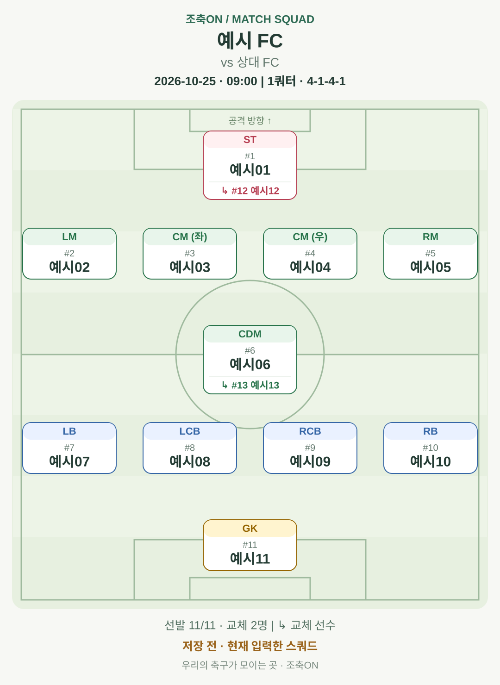
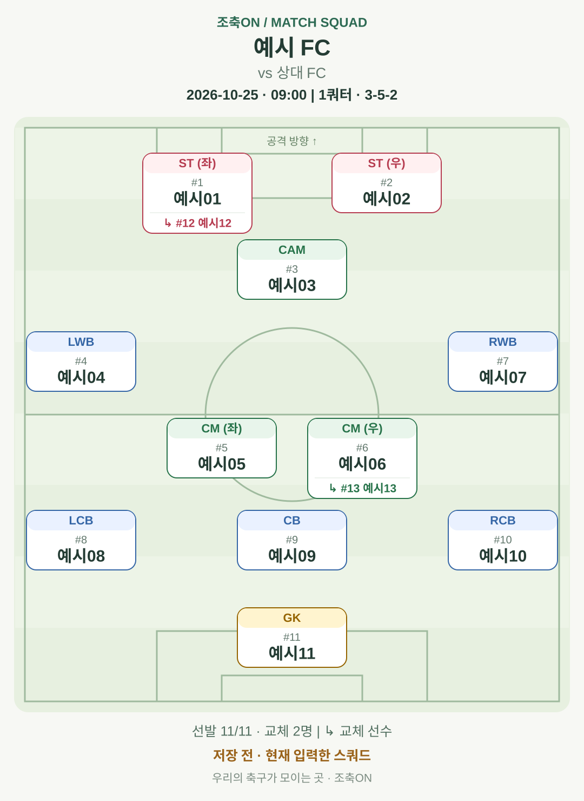
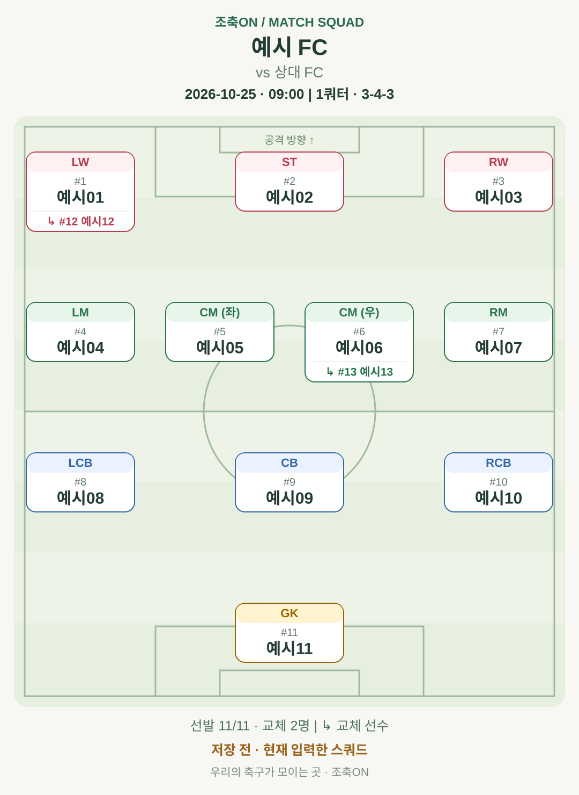

스쿼드 이미지 공유
2026-10-19 · 운영 기능 예시 · 모두 가상 선수
02 스쿼드 배치 → 스쿼드 이미지 → 구간·A/B팀 선택 → PNG 미리보기 → 이미지 공유 또는 PNG 다운로드
현재 입력을 반영하며 경기 저장과 별개. 저장 전이면 이미지에 명시. 외부 전송은 사용자가 공유 창에서 선택.
4-1-2-3 · 선발과 교체
4-4-2 · 선발과 교체
4-2-3-1 · 선발과 교체
4-1-4-1 · 선발과 교체
3-5-2 · 선발과 교체
3-4-3 · 선발과 교체